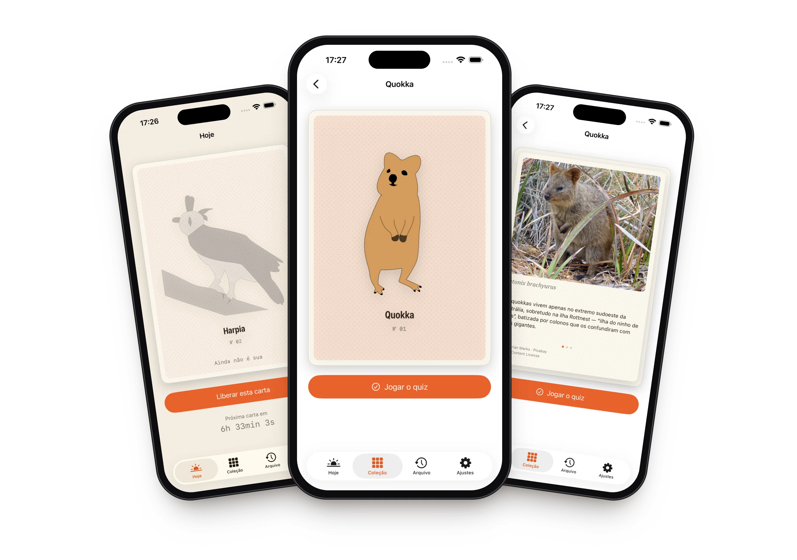
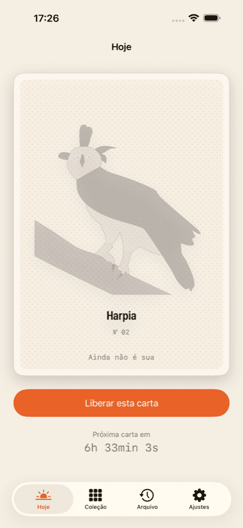
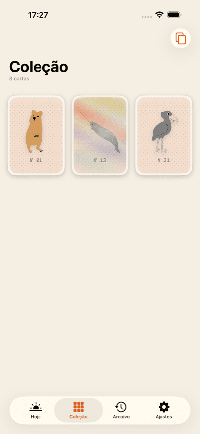
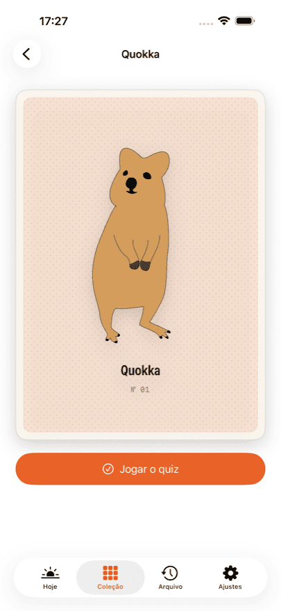
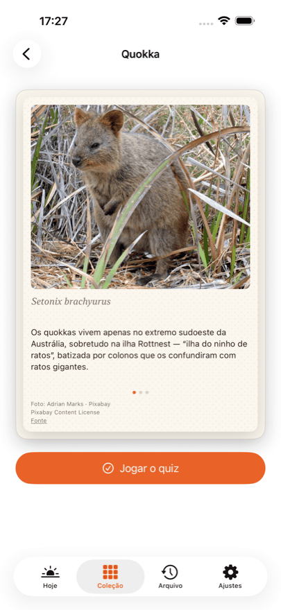
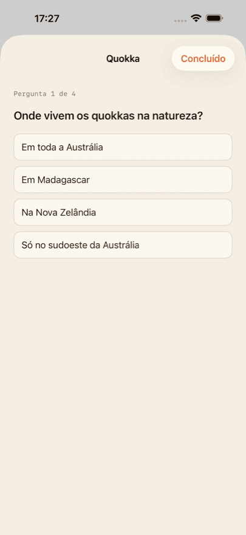

Daily Bestiary
Colecionar cartas de animais






O que você recebe
Uma carta por dia
Uma, nunca mais que isso. A carta do dia é calculada a partir da sua própria data de início, e não de uma data do calendário — você começa quando quiser.
Uma foto e três fatos
Cada verso traz uma fotografia real do animal, três fatos e o nome científico.
Um quiz por animal
Quatro perguntas para cada animal, revisadas por um professor de biologia. Dá para jogar de novo sempre.
Uma coleção que cresce
O álbum mostra só as suas cartas. Sem espaços vazios, sem “x de y”, sem corrida.
Cartas holográficas
Algumas cartas brilham: incline o telefone e a luz percorre a superfície.
Collector
Collector abre o arquivo: um dia perdido ainda pode ser recuperado. A carta do dia vem incluída todo dia, e você recebe suas estatísticas de quiz de toda a coleção.
Collector é uma assinatura e se renova até você cancelar. O cancelamento pode ser feito a qualquer momento nos ajustes da sua conta Apple. Os preços e prazos atuais aparecem na App Store, porque variam de país para país.
Sem conta, sem feed, sem anúncios
Não há cadastro nem login. Sua coleção fica no seu aparelho e — se você estiver conectado ao iCloud — sincroniza de forma privada entre os seus próprios aparelhos. O desenvolvedor não tem acesso a ela.
Não há nada para rolar nem nada para farmar. Sem anúncios, sem redes de publicidade, sem rastreamento entre apps. As compras passam por um prestador de serviços; a política de privacidade diz exatamente o que chega até ele.
Créditos das fotos
Os desenhos na frente das cartas foram feitos à mão. As fotografias no verso vêm de fontes livres — Pixabay, Unsplash e Wikimedia Commons.
Cada fotografia é creditada no verso da sua própria carta, com o autor, a licença e um link para a fonte. Não nas letras miúdas, e sim onde a imagem está.
Perguntas frequentes
Quanto custa o Daily Bestiary?
O download é gratuito e as três primeiras cartas são por nossa conta — com verso, fatos e quiz. Depois disso você desbloqueia a carta do dia avulsa, compra um pacote de dez ou assina o Collector. Os preços atuais aparecem na App Store; eles variam de país para país.
Preciso de uma conta?
Não. Não há cadastro, login nem perfil. O app nunca pede nome ou endereço de e-mail.
Quantas cartas existem no total?
Isso não está escrito em lugar nenhum — nem no app, nem aqui. Um total transforma o colecionar em uma barra de progresso, e é justamente isso que não queremos. Quando você tiver todas as cartas que existem, o app avisa.
O que acontece se eu perder um dia?
Essa carta não se perde. O Collector abre o arquivo, onde os dias perdidos podem ser recuperados. Sem o Collector, no dia seguinte vem simplesmente a próxima carta.
Minha coleção sincroniza entre iPhone e iPad?
Sim, desde que os dois aparelhos estejam conectados ao iCloud com a mesma conta Apple. A sincronização passa pelo seu banco de dados privado do iCloud, que o desenvolvedor não consegue ver.
Reinstalei o app — perdi minhas compras?
Não. Nos ajustes do app e em toda tela de compra existe “Restaurar compras”. Isso vincula de novo a assinatura e o saldo restante à sua conta Apple. A coleção em si volta pelo iCloud.
Como cancelo o Collector?
Pela Apple, não pelo app: Ajustes → seu nome → Assinaturas. Ali o cancelamento pode ser feito a qualquer momento, com efeito no fim do período atual. O app oferece o mesmo caminho pelo Customer Center em seus ajustes.
O app funciona sem conexão com a internet?
Sim. Todas as cartas, fotografias e perguntas do quiz estão dentro do app e não são baixadas. A conexão só é necessária para compras e para a sincronização com o iCloud.